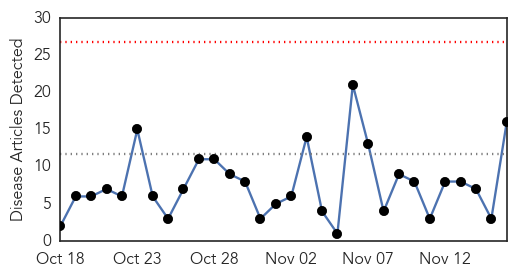
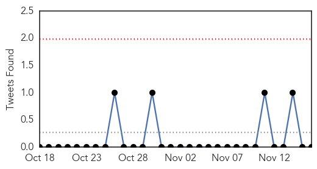

30 Day Trends
Web: 0 alerts, 0 warnings
Twitter: 0 alerts, 0 warnings
Top Articles:
- 0.977
- Duck farmer hit by bird flu alert supplies meat for ready meals to Tesco, Lidl and Aldi
- 0.971
- Precautions At Home, Workplace Needed To Protect From Flu
- 0.956
- DA calls for release of SARS ‘rogue unit’ report (DA
- 0.956
- DA Calls for Release of Sars 'Rogue Unit' Report
- 0.952
- Bird flu confirmed at Yorkshire duck farm
- 0.917
- Bird flu strain which can be passed to humans detected in Holland
- 0.897
- Flu Tied to Fatal Artery Tear
- 0.875
- Bird flu: New EU measures after Dutch and UK cases
- 0.875
- Study backs kids’ flu vaccines
- 0.804
- Dutch ban poultry transport over ‘highly pathogenic’ bird flu strain — RT News
- 0.766
- EU Urgent Meeting After Netherlands Outbreak
- 0.705
- Pet Talk: UI grad's passion has taken her all over the globe
- 0.699
- Highly infectious strain of bird flu found in Netherlands
- 0.687
- The drugs don’t work
- 0.558
- Poultry destroyed after bird flu found at Dutch farm
- 0.554
- Poultry destroyed after bird flu found at Dutch farm
Top Tweets:
- 0.768
- RT: Analisi - Ebola e Influenza: chi dobbiamo temere di più? http://t.co/TojCyzaSkn h/t tetano
Web/News Articles
Tweets
Article Locations

Article Confidences